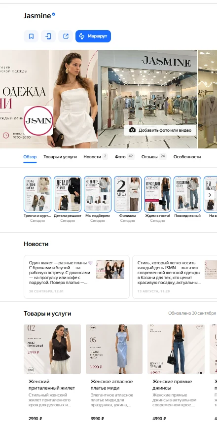

Реклама помогает привести человека к вашему предложению. Дальше ему нужно понять, подходит ли компания: какие услуги есть, сколько они стоят, где вы находитесь и как обратиться.
Путь от поиска до обращения
- Название и категория. Понятно ли, чем вы занимаетесь?
- Первое впечатление. Есть ли чёткие фотографии входа, пространства и результата работы?
- Предложение. Совпадают ли названия услуг и цены с реальными условиями?
- Доверие. Есть ли ответы на вопросы и актуальные отзывы?
- Действие. Работают ли телефон, сайт и способ записи?
Что можно сделать сегодня
Откройте профиль с телефона как новый посетитель. Найдите одну основную услугу, её цену и способ заказа. Запишите всё, что пришлось искать или уточнять. Начните исправления с этих пунктов.
Что даёт оформление
Единый визуальный стиль и ясное содержание помогают человеку разобраться. Они не заменяют качество услуги и не гарантируют места в поиске или число обращений. Доступность конкретных разделов профиля проверяют отдельно.